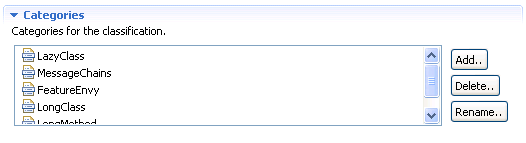

Editar clasificacionesEditar clasificaciones
Editar clasificacionesEditar clasificacionesPara editar una clasificación existente en primer lugar hay que indicar que la clasificación debe ser de usuario tal y como se indicó en la sección del editor de clasificaciones.
Una vez seleccionada una clasificación de usuario su edición consiste en modificar sus atributos de forma similar a como se indicaba en la sección de creación de una nueva clasificación:
En la sección Selected Classification, se puede especificar la descripción para la clasificación y determinar si se trata o no de una clasificación multicategoría. La descripción es simplemente un atributo descriptivo. El hecho de que la clasificación sea multicategoría indica que se permite que una refactorización pertenezca a más de una de las categorías de la clasificación, en caso de que este atributo no esté marcado cada refactorización sólo podrá pertenecer a un máximo de una categoría para esta clasificación.
En la sección Categories, se pueden añadir categorías a las que componen la clasificación pulsando el botón de añadir. También se pueden eliminar categorías existentes o renombrar categorías.
La eliminación de una categoría supone eliminarla de la clasificación y a su vez hace que todas las refactorizaciones que pertenecen a la categoría dejen de hacerlo. Es necesario advertir de que en caso de que se quisiera recuperar la categoría eliminada creándola de nuevo, no se restaurarían las refactorizaciones que anteriormente pertenecían a ella.

Sección de categorías de la clasificación
Además en la sección Classifications, se puede renombrar la clasificación seleccionada pulsando sobre el botón de renombrar.
Sección de categorías de la clasificación